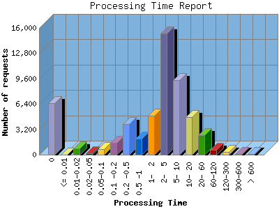

NPS Internet Solutions, Inc.
NPS Internet Solutions, Inc.
The Processing Time report shows the time it took for your server (or your host's server) to process each request. The processing time is listed in seconds with a theoretical accuracy of milliseconds. Note if your processing time appears to be about 100-times too long, then you are probably hosted on an IIS system that reports in 100th second intervals rather than second intervals.

| Processing Time | Number of requests | |
|---|---|---|
| 1. | 0 | 6,481 |
| 2. | <= 0.01 | 0 |
| 3. | 0.01-0.02 | 796 |
| 4. | 0.02-0.05 | 166 |
| 5. | 0.05-0.1 | 678 |
| 6. | 0.1 -0.2 | 1,515 |
| 7. | 0.2 -0.5 | 3,828 |
| 8. | 0.5 -1 | 1,996 |
| 9. | 1- 2 | 4,887 |
| 10. | 2- 5 | 15,274 |
| 11. | 5- 10 | 9,386 |
| 12. | 10- 20 | 4,751 |
| 13. | 20- 60 | 2,499 |
| 14. | 60-120 | 632 |
| 15. | 120-300 | 356 |
| 16. | 300-600 | 98 |
| 17. | > 600 | 47 |
This report was generated on August 16, 2004 03:59.
Report time frame December 30, 2003 01:23 to August 16, 2004 09:47.
| Web statistics report powered by: | |
|
NPS Internet Solutions, Inc.
|
|
| Web statistics report produced by: analog 5.32 / Report Magic 2.21 |